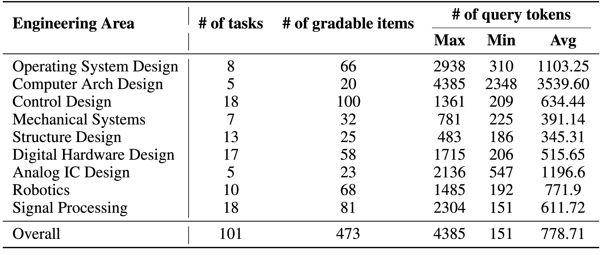

2025-06: EngDesign website is live! 🎉
Engineering design represents a fundamentally different challenge for AI compared to traditional problem solving. While existing benchmarks focus on factual recall and textbook-style questions, real-world engineering design demands synthesis of domain knowledge, navigation of complex trade-offs, and management of practical design processes. We introduce EngDesign, a benchmark that evaluates AI systems' abilities to perform practical engineering design tasks across nine domains: Operating System Design, Computer Architecture Design, Control System Design, Mechanical Systems, Structural Design, Digital Hardware Design, Analog Integrated Circuit Design, Robotics, and Signal Processing. EngDesign pioneers a simulation-based evaluation paradigm where AI-generated designs undergo rigorous testing through executable, domain-specific simulations—from circuit SPICE simulations to structural finite element analysis. This establishes a new benchmark paradigm that moves beyond textbook knowledge to assess genuine engineering capability through dynamic, simulation-driven functional verification.
ENGDESIGN, a multi-domain benchmark developed to evaluate the capabilities of LLMs in real-world engineering design tasks. Unlike conventional QA benchmarks, ENGDESIGN adopts a rigorous simulation-based evaluation pipeline to assess model performance in practical, design-oriented scenarios. Table 1 summarizes the benchmark’s key statistics: it comprises 101 design tasks spanning 9 engineering domains, with a total of 473 gradable items. While the task distribution may appear uneven, it naturally reflects the domain expertise of our contributors and the filtering rigor imposed by our multi-stage review process. Notably, the average prompt length in ENGDESIGN is 778.71 tokens, substantially higher than typical QA benchmarks2 , highlighting the contextual richness and complexity of realistic engineering design problems.
Among the 101 tasks in ENGDESIGN, 48 tasks require domain-specific scientific software such as MATLAB or Cadence for evaluation, while the remaining 53 tasks are fully open-sourced and evaluated using manually authored evaluation scripts. We consolidate these tasks into a subset called ENGDESIGN-OPEN to support broader community adoption without licensing constraints. Additionally, 23 tasks of ENGDESIGN incorporate images as part of the task input to LLMs.
Each task of ENGDESIGN consists of the following four key components: 1. Task Description. This part is the query prompt fed into the LLMs, offering a clear and detailed definition of the engineering design problem, including design objectives, specifications, constraints. 2. Evaluation Rubrics. Given the complexity of ENGDESIGN tasks, each task is further decomposed into multiple gradable items evaluated individually during the performance check stage. The evalua124 tion rubrics define the assessment criteria and scoring metrics, with a full score of 100. This enables models to receive partial credit even if the design does not fully meet all specified requirements. 3. Evaluation Pipeline. Each task includes automated evaluation scripts that assess the LLMs’ designs. The evaluation returns a binary pass/fail indicator, a numerical score, and evaluation logs for further analysis. 4. Reference Design. Each task provides a validated reference design that fully satisfies all specified requirements, ensuring the feasibility and realism of the design challenge.

EngDesign example XG_05

EngDesign example TB_04

EngDesign example RK_03

EngDesign example DL_01
We evaluate frontier models on EngDesign including both general-purpose chat models and reasoning models. We report three primary evaluation metrics: (1) Average Pass Rate, (2) Average Score, and (3) Reasoning Robustness. Each task is evaluated over three independent trials per model.
Average Pass Rate (APR) measures the percentage of models that correctly solve the task.
Average Score (AS) measures the average score of the models on the task.
Reasoning Robustness (RR) measures the robustness of the models to different reasoning tasks.
Click on APR or AS to expand detailed results for each domain.
Last updated: 2025-06-18
| Reset | Average Pass Rate (APR) | Average Score (AS) | Reasoning Robustness (RR) | |||||||||||||||||||
|---|---|---|---|---|---|---|---|---|---|---|---|---|---|---|---|---|---|---|---|---|---|---|
| Name | Date | Overall | AICD | Arch | Ctrl | DHD | Mech | OS | Robo | SigP | Stru | Overall | AICD | Arch | Ctrl | DHD | Mech | OS | Robo | SigP | Stru | Overall |
Overall results of different models on the EngDesign leaderboard. The best-performing model in each category is in-bold, and the second best is underlined.
To emulate the workflow of human engineers, we implement an iterative design protocol that allows LLMs to refine their solutions based on feedback from previous attempts. In our implementation, the LLM is provided with its previous design output along with corresponding evaluation results, such as scores, performance metrics, and diagnostic logs, and is then prompted to generate an improved design in the subsequent iteration. As shown in the left plot of Figure 6, model performance consistently improves with additional iterations. Notably, o3 achieves almost a 60% pass rate after ten iterations. However, we also observed that iterative design does not help in all cases. For example, in Analog IC design tasks, models still fail to meet the requirements even after ten iterations.
Average pass rate of GPT-4o, o1, o3, and o4-mini with the iterative design setup.
We analyzed o4-mini’s responses to 70 tasks from ENGDESIGN in which the model failed evaluation, and manually annotated each failure with corresponding error types. Given the complexity of engineering design tasks, many responses exhibited multiple failure modes; we therefore allowed multi-label assignments per task. In total, 111 distinct errors were identified. The distribution of these errors is illustrated in Figure. More analysis is included in the Appendix.
Error distribution of 111 annotated error types for o4-mini on EngDesign.
@inproceedings{[AUTHOR_LASTNAME][YEAR][BENCHMARK_SHORTNAME],
title={[BENCHMARK_NAME]: [BENCHMARK_DESCRIPTION]},
author={[AUTHOR_LIST]},
booktitle={Proceedings of [CONFERENCE]},
year={[YEAR]},
}